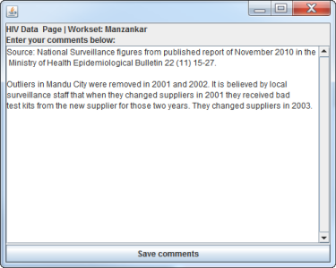

Before starting there are number of key issues you must consider in order to build a representative national epidemic model for your country.
No two national HIV epidemics look alike. They start at different times. They grow at different rates. They rise to different levels of severity. They involve different sub-populations. They vary from one region of the country to the next. Understanding your own national epidemic is essential to constructing a model that accurately captures the realities of HIV spread in your country. This section will discuss some of the issues you should consider carefully before you make important decisions on how to construct your national epidemic model in EPP.
UNAIDS uses the following classifications to differentiate types of epidemics:
Generalized epidemic. A generalized HIV epidemic is an epidemic that is self-sustaining through heterosexual transmission. In a generalized epidemic, HIV prevalence usually exceeds 1% among pregnant women attending antenatal clinics.
Concentrated epidemic. In a concentrated epidemic HIV has spread rapidly in one or more populations but is not well established in the general population. Typically, the prevalence is over 5% in sub-populations while remaining under 1% in the general population, although these thresholds must be interpreted with caution. In a concentrated HIV epidemic there is still the opportunity to focus HIV prevention, treatment, care, and support efforts on the most affected sub-populations, while recognizing that no sub-population is fully self-contained.
Low level epidemic. The term ‘low-level epidemic’ is used for epidemics where HIV prevalence has not consistently exceeded 1% in the general population nationally, nor 5% in any sub-population.
Within EPP and this documentation, no distinction is normally made between concentrated and low-level epidemics, because in both cases HIV normally remains heavily focused in a number of key populations at higher risk. When the term “concentrated” is used in these help pages, it normally refers to both concentrated and low-level epidemics.
As you design your national model, keep in mind the following and how they apply in your own country:
In the real world, the national HIV epidemic in a country is almost always made up of different sub-epidemics. For example, in many countries with generalized epidemics, the epidemic can be characterized in terms of urban and rural epidemics. Increasingly, to better guide prevention and care programs, countries with generalized epidemics are looking at subnational epidemics in different regions of the country, which often vary substantially in timing and severity. In countries with concentrated epidemics, HIV is often concentrated in key sub-populations at higher risk such as female sex workers (FSW) and clients, people who inject drugs, men who have sex with men (MSM) or transgenders (TG) and their sexual partners. The groups contributing to the epidemic vary greatly from country to country, so you must think carefully about what is important in your country.
These sub-epidemics evolve at different rates and reach different peak levels of HIV prevalence at different times. For example, in a generalized epidemic country, the rural epidemic typically has lower prevalence than the urban epidemics. In concentrated epidemics, the speed with which HIV spread often varies from one sub-population to the next. Usually spread among people who inject drugs is extremely rapid, reaching a high prevalence of 40 to 80 percent in a year or two and then stabilizing at these levels. However, the final level and the start time vary greatly from country to country and even within countries. HIV levels among sex workers and clients generally grow somewhat slower, but still much more rapidly than in the population at large. In some countries, epidemics among MSM peaked in the mid-1980s and then stabilized or declined. In other countries, epidemics among MSM have only started rapid growth in the last decade. There is growing recognition that prevalence among MSM populations is much higher than overall population prevalence even in generalized epidemics. The exact patterns and trends in these sub-epidemics are different in every country, so it is important before you begin to understand the evolution of the different sub-epidemics in yours.
In many places, the sub-epidemics vary substantially by geographic area even within a country. HIV does not spread uniformly throughout a country and, especially in larger countries, the sub-epidemics may vary significantly from one state or province to the next. For example, Northern Thailand saw prevalence in the population at large exceeding 10 percent in the early 1990s while the epidemic in the Northeast of the country peaked closer to 1 or 2 percent. In addition, urban HIV prevalence is often much higher than rural, meaning that the increasing urbanization seen in many countries is increasing overall national prevalence levels. In generalized epidemics, EPP automatically adjusts for shifts in population from rural to urban settings based upon urban proportions from the United Nations Population Division or from user supplied data. If there are large geographic variations in your country, you may want to consider dividing the country up for modeling purposes if you have adequate data.
In many places, antiretroviral therapy (ART) is altering the shape of epidemics. ART greatly increases the survival of persons living with HIV. As the promise of universal access becomes a reality in many countries, the additional survival of those affected by HIV is producing increases in the number of current infections, as people survive longer. In addition, ART reduces HIV transmission substantially, especially if adherence to therapy is good. These increases in prevalence and the reductions in transmission must be accounted for in fitting HIV epidemics or the incidence will not be properly calculated.
These realities mean that obtaining the overall trends and patterns in a national epidemic will often require combining multiple sub-epidemics in different geographic areas or sub-populations of different sizes, which grow at variable rates and peak at different times, and adjusting these projections for the influence of ART. The package you are using now has been created to simplify this process and encourage more careful analysis of national HIV epidemics. However, you are the one who will need to decide how to divide your national epidemics into its most important sub-components.
When using EPP, you'll start by making important decisions on how to divide up your national epidemic. Once you make those decisions, EPP is designed to simplify entering the data for each sub-epidemic, fitting it with its own model and then combining these models to create your national projection. However, these decisions cannot be arbitrary, they must be based on an understanding of what your epidemic looks like, what data you have available, and what is needed to guide national policies and programs. Thus, before you begin the process, you should do the following.
Gather data on HIV, population sizes and ART. Before starting to work with EPP you should first gather all available HIV surveillance, size estimates and behavioral data for your country and the populations to be modeled. For HIV surveillance data, be sure to gather sample sizes as well as prevalence values. For size estimates, find the best evidence-informed values for each sub-population which contributes substantially to your national epidemic. Finally, collect together the data on number of people on ART. The level of adult ART influences the shape of the curves EPP fits, so you must enter the ART data into Spectrum under the Program Statistics menu in AIM before you begin doing fits with EPP.
If you do not have sample sizes, you can use the default values of 300 built into EPP. You will also need the sizes of each population you are going to model. For generalized epidemics, this will usually mean the population size of the geographic regions being modeled. For concentrated epidemics, this will be the size of each key sub-population contributing substantially to the epidemic. If you plan to use the turnover feature to allow people to move in and out of key populations at higher risk in concentrated epidemics, then you should also gather survey results on the average time people tend to stay in that group (e.g., maybe men are primarily clients of sex workers for a period of time prior to marriage - you would then look for survey findings on how long this period is in your country).
Decide how to compose your national epidemic from sub-epidemics. You should carefully examine the data you have collected and decide how your national epidemic can be divided into sub-epidemics. Are there differences in urban and rural prevalence levels and epidemic growth? Are there some geographic regions that have different patterns of epidemic growth and need to be broken out separately? What are the key sub-populations that are contributing to your epidemic? You need to make these decisions before working with EPP, not during the process.
For each sub-population you intend to include, be sure you have adequate data. Ideally you should have a time series of at least four or five points, although there are techniques for including populations with less data using the Advanced Options features of EPP. These are discussed in that section of the EPP help.
Consider if any of your projections will need to be calibrated or adjusted later. At this stage, you should also be considering how representative your data are. In many cases, surveillance data may be biased. For example, surveillance systems often focus on the highest prevalence parts of a country, which tends to bias the HIV prevalence data they produce upward. In concentrated epidemics, it is rare to get a truly nationally representative sample of sex workers, MSM or people who inject drugs. Often data for these groups is collected from higher risk, but more easily accessible parts of the population, e.g., brothel-based sex workers or MSM at cruising sites, which once again tends to bias the data upward. After reviewing the available data sources in your country, if you find there are substantial biases, you should think carefully about how you might adjust the models you fit to this data up or down to be more representative of your national situation, i.e., how do you calibrate the model? EPP offers you an opportunity to apply such calibrations after fitting on the Calibration page.
Once you have collected together and carefully reviewed your data, decided on how to divide up your national epidemic, and have considered the types of adjustments you may need to make later, you are ready to begin building your national projection. The following summarizes the essential steps in this process and where in EPP you carry out each step:
For additional help on any of these individual steps, please click on the link for the corresponding EPP page above.
In most cases EPP pages provide you a simple set of instructions on how to use them. If you need more detail, click on the Help button in the lower right of the page, which will bring up these pages that explain things in more depth.
In most EPP tables and text entry boxes, cells in which the user is to enter data are colored light blue or white. Table lines and columns in other colors are normally calculated by EPP to provide useful information for the user.
Most pages have four buttons in the lower right hand corner. These are:
